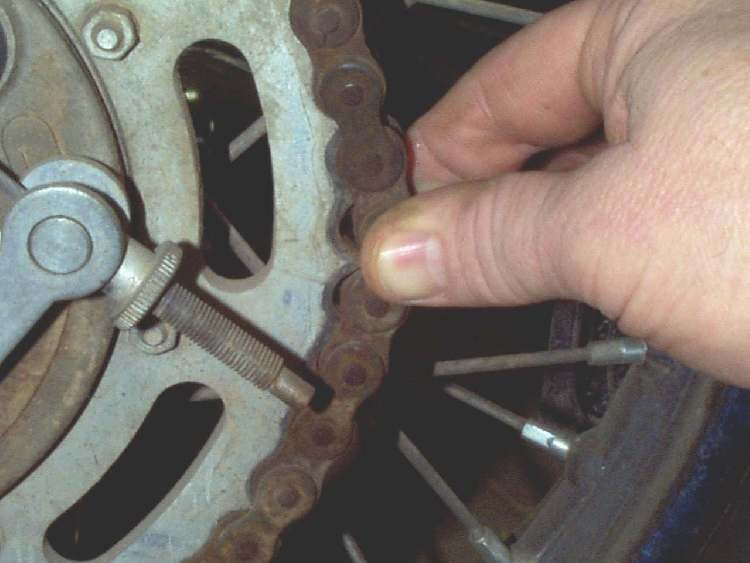

Home mechanic (basic tools) · Time: 15 to 20 min (estimate)
A chain "stretches" because the pins and bushes inside each link wear, so every link gets a little longer. A worn chain no longer fits the sprocket teeth, rides up on them, wears them into hooks and can jump or snap. This check tells you whether the chain can be adjusted and kept, or whether the chain and both sprockets must be replaced together.
Safety
- Engine off, key out, bike on the centre stand. Turn the wheel by hand only.
- Keep fingers out from between the chain and sprocket while turning the wheel.
You need
- A torch, rags, a steel rule or vernier caliper.
- The wear limit from the maker of the chain fitted. Many chain makers publish a length over a set number of links. Do not use a generic number. The K-Light manual's 10-link figure of 127 mm is the length of a new chain of that size, so it is not a usable wear limit.
Steps
- Clean the chain enough to see the links (Clean and lubricate the chain).
- Look at the chain adjusters. If they are near the end of their range, the chain is long.
- Turn the wheel slowly and watch every link go round the rear sprocket. Note stiff links that stay bent, cracked or missing rollers, cracked side plates, and rust coming out from between the plates.
- At the back of the rear sprocket, pull the chain backwards, away from the teeth. On a good chain it hardly moves. If it lifts clear so you can see much of a tooth under the roller, the chain is worn.
- Measure slack at several points around the chain (Check and adjust chain slack). A large difference between tight and loose points means uneven wear.
- Grip the chain on the lower run and bend it sideways. A worn chain bends a lot sideways.
- If you have the chain maker's limit, stretch the chain tight (sit on the bike or set normal slack), measure the length over the stated number of pins with a rule or vernier in two or three places, and compare.
- Check both sprockets (Inspect sprockets).
Decide
- Chain good, sprockets good: adjust and keep lubricating.
- Damaged rollers or side plates, or links that stay stiff after cleaning: the K-Light manual says replace the chain.
- Chain worn or sprockets hooked: replace the chain and both sprockets together. The K-Light manual warns not to fit a new chain on worn sprockets or a worn chain on new sprockets; the new part wears out fast. See Replace the chain and sprockets.
Check your work
- You have written down the adjuster position, the slack at the tightest and loosest points, and the condition of links and sprockets.
If it did not fix the problem
- Chain was good but still jumps or comes off: Chain jumps teeth or comes off the sprockets.
- New chain wears fast: Chain needs adjusting very often.
Reference values (K-Light 125)
| Item | Value | Source |
|---|---|---|
| Chain fitted | 428HO-1, 134 links | K-Light 125 manual, PDF p. 158 |
| Rear sprocket | 41 teeth | K-Light 125 manual, PDF p. 158 |